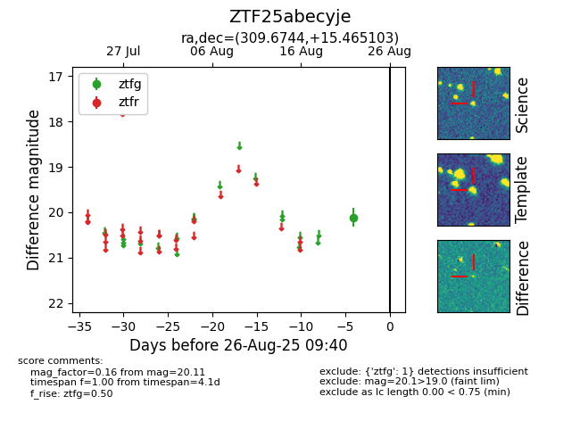

Target ZTF25abecyje at 2025-08-26 09:40, see:
FINK: fink-portal.org/ZTF25abecyje
Lasair: lasair-ztf.lsst.ac.uk/objects/ZTF25abecyje
ALeRCE: alerce.online/object/ZTF25abecyje
alt names
ZTF25abecyje (ztf,fink)
coordinates:
equatorial (ra, dec) = (309.6744,+15.46510)
galactic (l, b) = (59.7888,-15.38818)
photometry
last ztfg=20.11
1 ztfg detections
